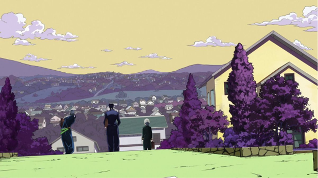
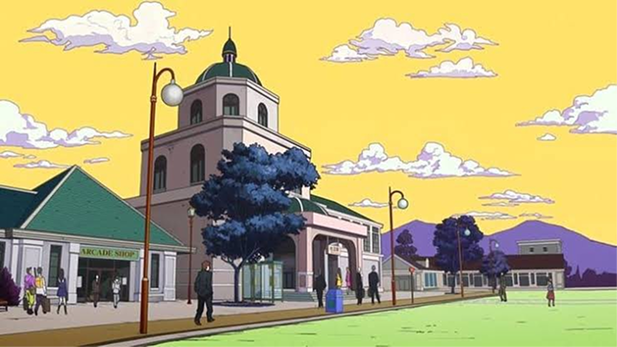
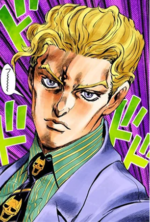
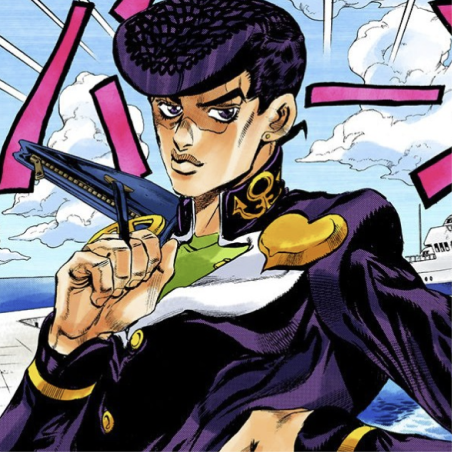
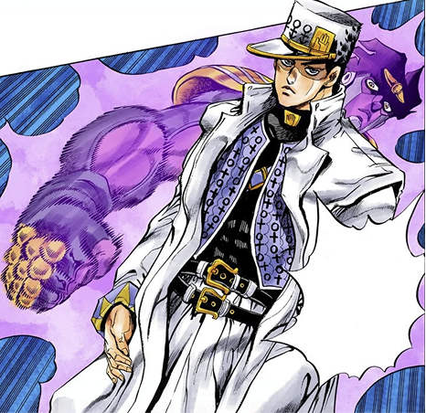
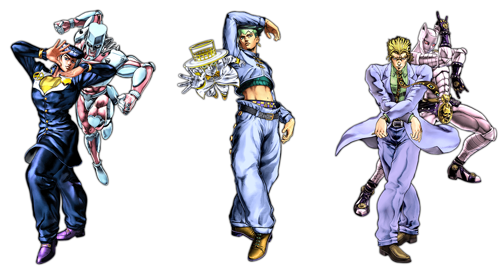

(BACKGROUND)
일본 소도시 모리오초를 배경으로, 일상과 기묘함이 공존하는 공간미가 특징. 잔잔한 주택가, 전봇대, 하늘 등 현실적인 풍경 속에 비현실적인 사건이 녹아든다. 도시의 평온한 색조와 미묘한 불길함이 공존하며, ‘보통의 일상 안의 기묘함’이라는 시리즈의 핵심 분위기를 형성한다. 전체적으로 따뜻하고 밝은 조명 아래에서도 정적 긴장감이 유지된다.


(SYMBOL)



키라 요시카게 – 해골무늬 넥타이
키라의 넥타이에 반복적으로 등장하는 해골 무늬는 죽음과 욕망의 상징이다. 그는 겉으로는 평범한 샐러리맨으로 살아가지만, 내면에는 살인 충동을 숨기고 있다. 해골은 그의 ‘정상적인 일상 속 숨겨진 광기’를 드러내는 이중성의 시각적 장치이며, 차분한 슈트 스타일 속에서도 불안감을 유발하는 포인트로 작용한다. 디자인적으로는 고딕적 장식과 반복 패턴이 결합되어, 질서 속의 기묘함을 표현한다.
히가시카타 죠스케 – 하트 뱃지
죠스케의 의상 곳곳에 등장하는 하트는‘자애와 인간미’를 상징한다. 그의 스탠드 ‘크레이지 다이아몬드’가 상처를 치유하는 능력을 지닌 것처럼, 하트는 ‘보호’와 ‘회복’의 상징적 역할을 한다. 또한 하트 모양은 90년대 청춘 감성과 맞물려, 그의 따뜻하면서도 반항적인 캐릭터성을 시각적으로 강조한다. 포즈와 헤어스타일과 함께 하나의 아이덴티티 심볼로 기능한다.
쿠죠 죠타로 – 닻(Anchor) 무늬
죠타로의 모자와 의상에 새겨진 닻 문양은 ‘강인함’과 ‘흔들리지 않는 의지’를 나타낸다. 바다와 항해를 연상시키는 앵커는 그의 냉철하고 차분한 성격, 그리고 ‘조류에도 흔들리지 않는 정신력’을 표현한다. 또한 해양학자라는 직업적 설정과도 연결되어, 인물의 내면과 외형을 통합하는 시각적 상징으로 작용한다. 해양 모티프는 죠죠 세계에서 ‘시간의 흐름과 세대의 연속성’을 암시하는 장치이기도 하다.
(FORM)
인체 비례가 안정적이면서도 비틀린 포즈와 리듬감 있는 실루엣이 강조된다. 캐릭터의 의상은 일상복이지만, 하이패션처럼 구조적이고 개성적인 패턴을 가진다. 직선적 구도와 과장된 자세가 대비를 이루며, 평범한 청춘의 외형 속에서 초현실적 조형미를 완성한다.
